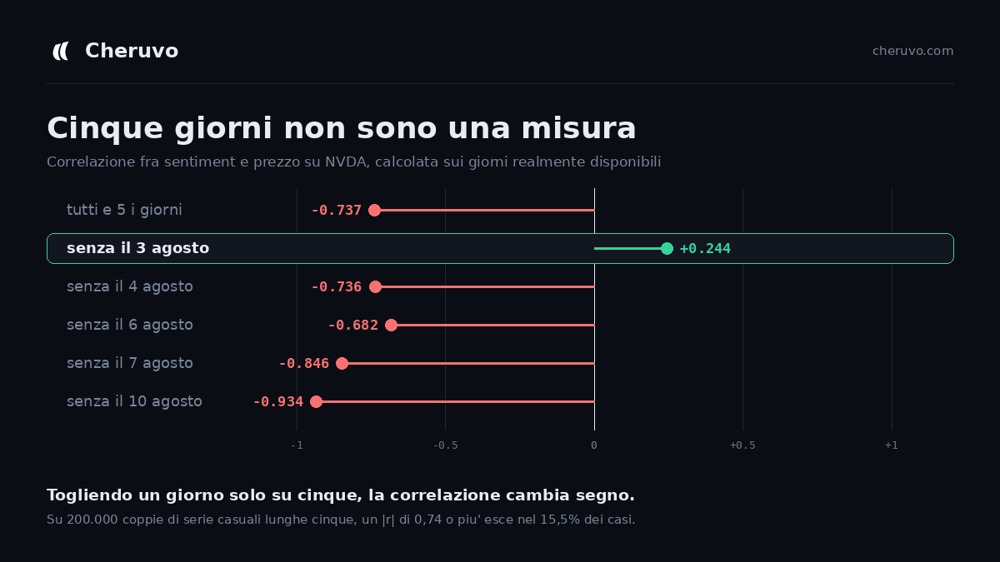
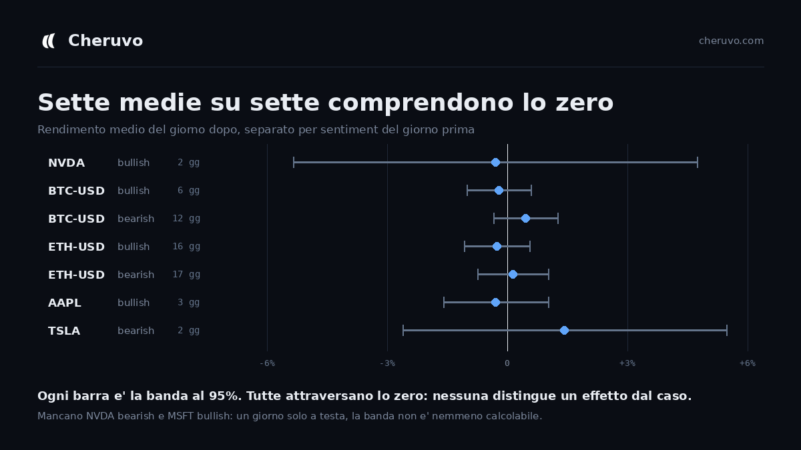

My blog said 30 data points minimum. My product was showing five.
I build Cheruvo alone. It reads financial news, scores the sentiment, and shows it next to the price. It is free, it has almost no users, and this week it got its first one who actually pushed on it.
He registered, tested the stocks section, and asked a specific question: why did this one article about NVDA score −0.9? That answer turned out to be long, and while I was digging for it I found something worse that had nothing to do with his question.
The number that was not a measurement
One panel showed the correlation between daily sentiment and price. For NVDA it read −0.712. Three decimals, large type, red, with the words Strong negative underneath.
I went to count how many days it was computed on. Five.
So I ran the obvious check, dropping one day at a time:

Removing a single day out of five, 3 August, takes the correlation from −0.74 to +0.24. It changes sign. One observation was carrying the entire result.
Then I checked how easy that number is to get by accident. I generated 200,000 pairs of random series of length five and computed r for each. An absolute value of 0.737 or higher came up in 15.5% of them. You do not need a relationship to exist to see that number on your screen. You need to be unlucky about one day in seven.
The part that stings
A month earlier I had published an article on this same blog explaining how to measure the sentiment/price relationship yourself. It contains this sentence:
With fewer than 30 data points, any r is more noise than signal.
And a few lines above, about high values: above 0.6 it is strong, and suspicious: check how many days it is computed on.
I wrote that. Then I shipped a component that printed r at n = 5 and labelled it Strong negative. The minimum threshold in the code was five pairs, and I had typed it myself months earlier without thinking about it for even a second.
Knowing the rule and enforcing the rule turn out to be entirely different pieces of work, and only one of them is in the repository.
Looking for the same disease elsewhere
Once you find one, you go looking. The correlation formula turned out to be written in three different files with three different minimum thresholds: 5, 5 and 10. Three copies of the same mistake, so removing it from one would have left it in the other two.
Then there were two more panels, and one of them had been behind what used to be the paid plan. They said average return after bullish days and the same for bearish days, coloured green or red. They read like a trading rule.
I measured them across six tickers:

Seven computable averages out of seven include zero. Not one of them distinguishes an effect from chance. And two of the numbers on screen were not averages at all: NVDA bearish was a single day, MSFT bullish was a single day. One trading session, printed with a plus sign and a colour, described as an average.
What I removed
- The correlation coefficient does not appear below 20 pairs. When it appears, it always carries its 95% band.
- If the band contains zero, the interface says so in words instead of turning red. Colour now means distinguishable from zero, not large number.
- The words strong and moderate are gone. They assigned an intensity judgement to numbers that were often indistinguishable from chance, which is worse than the number itself.
- The average-return panels do not appear below 30 days, and carry their band.
- The regression line in the scatter plot is only drawn when the correlation excludes zero. A diagonal through a cloud of eight points asserts more than the number printed beside it, and removing the number while keeping the line would have been fixing the window and leaving the door open.
- The daily sentiment average now travels with the number of articles behind it and how much they disagree. On 7 August, NVDA had 61 articles averaging +0.21, with individual scores from −0.9 to +0.8. The average was precise and the articles were in total disagreement, both at once. One number could not say that.
The result is that the product now shows less than it did, and in several places says I do not know.
Why bother, at 14 sessions
I should be honest about the scale here, because it is the part people usually leave out. Over the four days I have been counting, the site had 14 sessions. One of them was a real engaged user. Some of the rest were me.
So this was not a decision taken under pressure from a user base. It was taken because that same user offered to discuss the project publicly, and if I leave a number that does not hold, the first person who checks takes it apart. At that point nothing I got right counts for anything.
The thing I want to remember: that five-pair threshold was never covered by a test, and there was a reason. It was not a computation, it was a display choice. Formulas get tested. Presentation does not. And the lie was entirely in the presentation, because the arithmetic behind −0.712 was perfectly correct.
The correlation now lives in one file, with the measurement table written in the comment above the threshold, so that the next person who wants to lower it has to read why it is there first. That person is probably me.
See it for yourself
Cheruvo is free, no card, no locked features. On most tickers the correlation panel currently says there is not enough data yet, which is the point.
Open Cheruvo →This article is for information and education only and is not financial advice. Past performance and historical correlations do not guarantee future results.